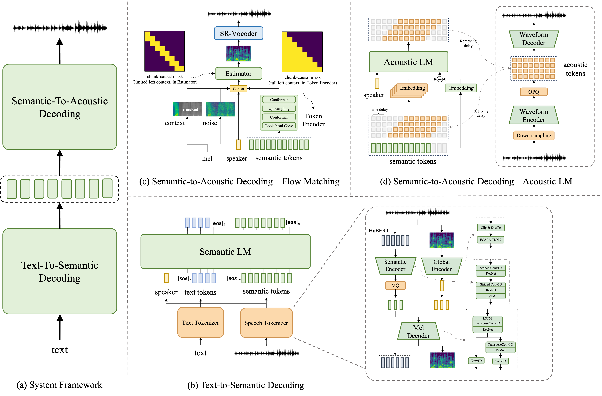

Abstract: In this work, we propose a high-quality streaming foundation text-to-speech system, FireRedTTS-1S, upgraded from the streamable version of FireRedTTS. FireRedTTS-1S achieves streaming generation via two steps: text-to-semantic decoding and semantic-to-acoustic decoding. In text-to-semantic decoding, a semantic-aware speech tokenizer converts the speech signal into semantic tokens, which can be synthesized from the text via a semantic language model in an auto-regressive manner. Meanwhile, the semantic-to-acoustic decoding module simultaneously translates generated semantic tokens into the speech signal in a streaming way via a super-resolution causal audio codec and a multi-stream acoustic language model. This design enables us to produce high-quality speech audio in zero-shot settings while presenting a real-time generation process with low latency under 150ms. In experiments on zero-shot voice cloning, the objective results validate FireRedTTS-1S as a high-quality foundation model with comparable intelligibility and speaker similarity over industrial baseline systems. Furthermore, the subjective score of FireRedTTS-1S highlights its impressive synthesis performance, achieving comparable quality to the ground-truth recordings. These results validate FireRedTTS-1S as a high-quality streaming foundation TTS system.
System Overview

Figure 1. An overview of the FireRedTTS-1S: In (a) text-to-semantic decoding, a speech tokenizer is trained to extract semantic tokens and speaker embedding from the speech audio, and a semantic language model generates semantic tokens from the input text sequence and the speaker embedding from the reference audio. In (b) semantic-to-acoustic decoding, we can translate semantic tokens into the speech waveform in a streaming way. A multi-stream acoustic LM with a ``delay pattern" is trained to map semantic tokens into the multi-stream acoustic token sequence, which is encoded from the speech signal and decoded back by the acoustic codec.
Voice Cloning
Zero-Shot In-Context Learning
| Prompt | CosyVoice 2 | FireRedTTS-1 | FireRedTTS-1S | Ground Truth |
|---|